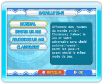

17 |
Bataille Wi-Fi (Dr. Mario) |
 |

Dans Dr. Mario, vous pouvez affronter des joueurs du monde entier via la connexion Wi-Fi Nintendo. Pour accéder à ce mode, sélectionnez CWF NINTENDO dans le menu principal de Dr. Mario puis NOTE: le bouton RESET ne peut pas être utilisé lorsque vous êtes connecté à la connexion Wi-Fi Nintendo.
NOTE: vous devez avoir au moins un ami enregistré dans votre liste d’amis pour pouvoir choisir INVITER UN AMI ou REJOINDRE UN AMI. Pour enregistrer des codes ami, sélectionnez PARAMETRES AMI dans le |
 |
 |
 |